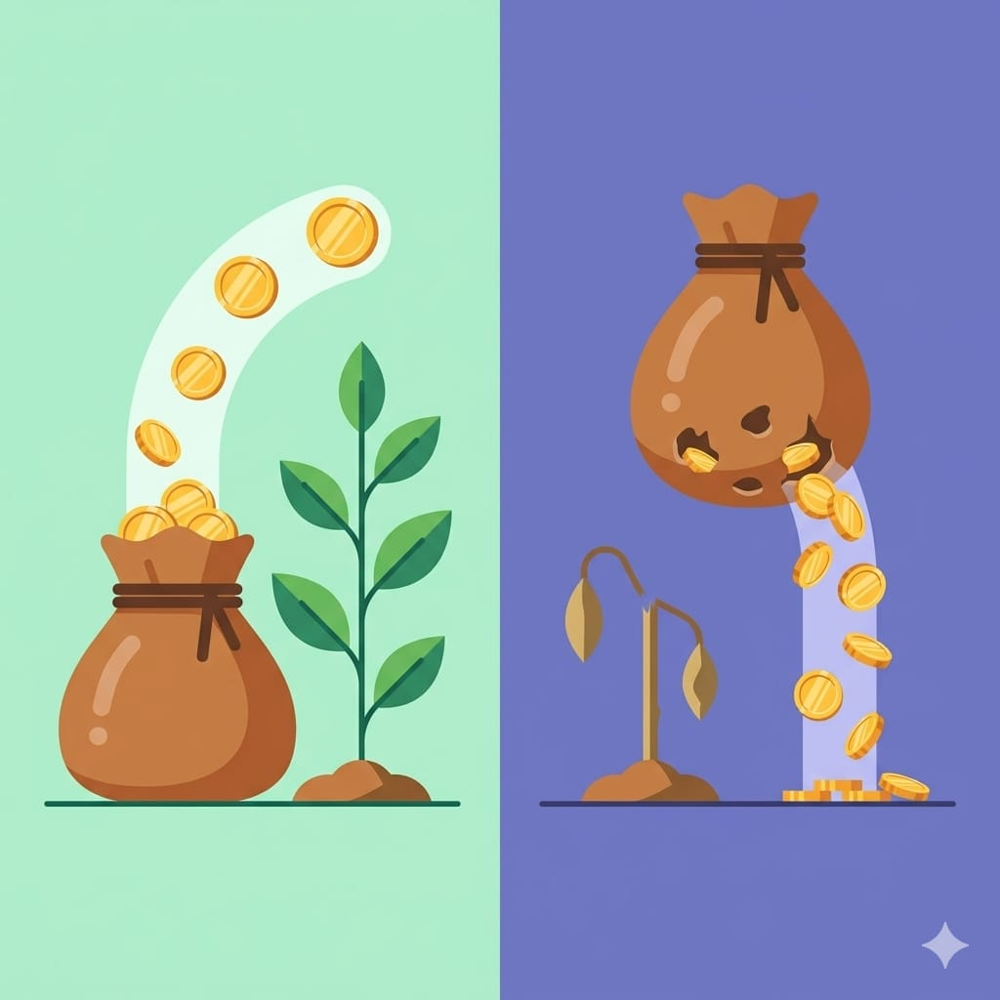

🎬 這篇也有影片版，可以搭配文末的影片一起看。
在「投資理財修煉」入門篇的最後，我想用一本書來收尾——《富爸爸窮爸爸》。這是很多人理財路上的啟蒙書，也是我自己開始認真看待金錢時，讀到的第一本讓我「觀念被翻轉」的書。這篇不是嚴謹的書評，而是我的讀後心得與啟發，分享它到底改變了我什麼。
一本書，兩種爸爸
書的設定很簡單：作者有兩個「爸爸」。一位是親生父親（窮爸爸），高學歷、工作穩定，但一輩子為錢煩惱；另一位是朋友的父親（富爸爸），學歷不高，卻靠著對金錢的理解累積了財富。
兩個爸爸對「錢」的態度南轅北轍，而這本書講的，就是富爸爸那套跟學校完全不教的金錢思維。
最顛覆我的一課：資產 vs 負債
如果這本書只能記住一件事，那就是它對「資產」和「負債」的定義。它講得極度白話：
- 資產：把錢放進你口袋的東西
- 負債：把錢從你口袋拿走的東西

這個定義為什麼顛覆？因為它打破了很多人的直覺。舉個書裡最有名的例子：很多人以為「自住的房子」是資產，但按這個定義，它其實比較像負債——因為它持續從你口袋拿走錢（房貸、稅、維護費），而不是放錢進來。
我讀到這段時真的愣了一下。原來我一直以為的「累積財產」，有些其實是在累積讓我持續花錢的東西。這一課讓我開始重新檢視：我買的每樣東西，到底是把錢帶進來、還是帶走？
讓錢為你工作
書裡另一個核心觀念是：窮人和中產為錢工作，富人讓錢為他們工作。
多數人的人生是「用時間換錢」——上班領薪水。但時間有限，這條路有天花板。富爸爸的思維是：把賺到的錢拿去買「能生錢的資產」（會產生現金流的東西），讓資產去幫你賺錢，慢慢減少對「用時間換錢」的依賴。
這跟我們前面幾篇談的複利、被動收入其實是同一件事的不同說法。這本書用故事把這個觀念講得特別好懂，也特別有感染力。
我的幾點啟發（也有保留）
老實說，這本書不是完美無缺的。分享我讀完後的幾個心得，包含一些保留：
- 觀念啟蒙滿分：它最大的價值是「改變你怎麼想錢」，這比任何具體招式都重要，很適合當理財的第一本書。
- 具體操作要保留：書裡有些致富手法（尤其房地產、創業）比較理想化、也跟台灣環境不同，別當成照做的教科書，抓觀念就好。
- 財務教育要自己補：這本書會點燃你的動機，但真正的知識（怎麼配置、怎麼分析）還是得靠後續學習——這也正是這個系列想陪你做的事。
《富爸爸窮爸爸》對我最大的意義，不是教我「怎麼變有錢」，而是讓我第一次認真問自己：我真的了解錢是怎麼運作的嗎？光是這個問題，就值得讀這本書。
如果你還沒讀過，很推薦找來看看；讀過的話，也歡迎看看我下面這支影片版的分享。這是入門篇的最後一篇，接下來的「進階篇」，我們要開始認識實際的投資工具了。
系列導覽
- 📚 回到 投資理財修煉 全系列目錄
- ⬅️ 上一篇：投資心態：長期 vs 短期、耐心 vs 貪婪
- ➡️ 下一篇：認識投資工具：股票、ETF、基金、債券全景（即將推出）
本文為個人學習記錄與知識整理，非投資建議。投資有風險，請依自身情況獨立判斷 🐾